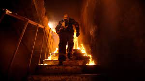
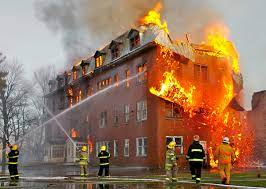

ЕВАКУАЦИЯ! Незабавно трябва да напуснем помещението и сградата, ако пожарът е достигнал по-големи размери. Евакуираме се внимателно, без да пречим на другите, като помагаме на децата и на трудноподвижните граждани. ЗАПОМНЕТЕ! Децата се страхуват от пожара и дима и затова имат навика да се крият под леглата, в гардероба и на други скришни места.
▪ Движението през задимени помещения и коридори да се извършва ниско долу по пода,покрай стената. В тези случаи не се връщайте назад.
▪ Не забравяйте да поставите на устата и носа си мокра носна кърпа или бинт.
▪ Този, който влиза в задименото помещение, е добре да бъде завързан с въже, като предварително се уточнят сигналите за помощ при нужда.
▪ При влизане в горящо помещение, вратите и прозорците отваряйте така, че огънят да не ви обгори.
▪ Не скачайте от прозорците и балконите. Не се спускайте по водосточни и каменинови тръби. При задимено стълбище не ползвайте асансьора. Най-безопасния път за евакуация е стълбището.
▪ Ако пътят до стълбището е възпрепятстван, или коридорът е много силно задимен, по-добре е да не тръгвате към стълбището.
▪ Останете в помещение, до което пожарът не е стигнал и не е задимено. Вратите се уплътняват с мокри текстилни материали (чаршафи, одеала и др.), за да не проникват димни продукти от задимения коридор. На отворен прозорец или по телефон, незабавно уведомете за присъствието си в стаята и потърсете помощ.
ВЕДНЪЖ НАПУСНАЛИ СГРАДАТА, под никакъв предлог не бива да се връщаме обратно в помещенията. Всеки трябва да знае, че след като специализираните органи за ПБЗН са пристигнали и започнали да гасят, те водят своя стaтистика кой е напуснал сградата и дали има още хора вътре в нея.
Незабавно уведомете пожарникарите в случаите, когато:
▪ познавате добре обстановката в обекта и можете да помогнете с напътствия от вън;
▪ сетили сте се, че в някое помещение са останали деца, възрастни, болни или блокирани от пожара хора;
▪ знаете за съществуване на материали, които могат да разпространят огъня или да предизвикат взрив;
▪ в сградата има уникати и ценности.
 